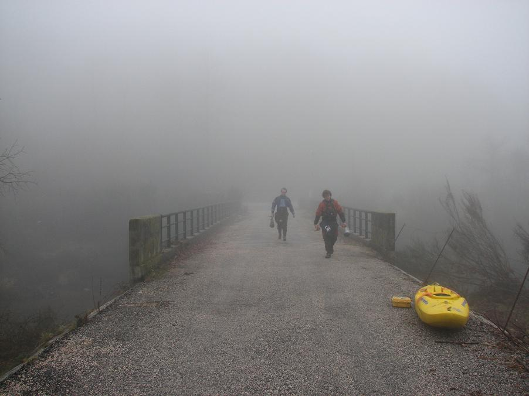
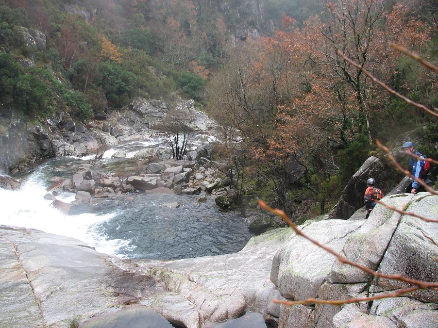

Rio Minho - Rio Castro Laboreiro
‘La indecisión es la llave a la
flexibilidad’
|
|
Rio Minho - Rio Castro Laboreiro |
||
|---|---|---|---|---|
|
‘La indecisión es la llave a la
flexibilidad’ |
A Tale of Two Rivers - Rio Minho
On the second paddling day of the trip, the team split, with Catherine and Mr. Fred electing to go playboating with Jorge to one of the many play waves on the Rio Minho. There are no photos, unfortunately, but any wave that allows you to surf over and back between two countries has to be cool.
In the middle of January what could be better than surfing a warm water wave only two-hours flying from Dublin?
The Minho forms the border between Portugal and Spain and has several play spots. On the day some of the team paddled water levels were low, the wave was about four metres wide and a meter high - only good for spins and blunts, with an easy large eddy river right. There are several other larger waves on the Minho, which is dam-controlled, so the waves can be found all year round.
Here's a clip by Jorge of the Frieira wave:
A Tale of Two Rivers - Rio Castro Laboreiro
The camera, meanwhile, went with the other half of the team to run one of the classics of Portuguese creeking - the Castro Laboreiro. For the record and to be more accurate, we ran the top section (Ameijoeira to Ribeiro de Baixo) but didn't have enough days on this trip to go back and run the bottom section.
Here too, as with the Minho, the river straddles the border - river right in Portugal and river left in Spain.
Ferg and Rob emerge from the fog...

In general, on this trip the weather was good, but some of the days and several of the mornings were fog-bound. The day on the Castro began in low-visibility, making signalling difficult. Rob waits...

This river was typical of much of the good stuff in Portugal - granite bedrock giving rise to perfectly smooth slides with clean lines on offer. Rob drives down the second drop...

Jim stays away from the hole...

Picture the scene - you're in a remote fog-bound gorge when, steathily, Ferg emerges from the gloom...

and pounces...

...but Jim makes good his escape, tearing off downstream, more afraid of what lurks behind rather than what lies ahead.

Huge granite slides were the order of the day on the Castro - great fun, but you wouldn't want ot be here in the rain when the bank gets too slippy for scouting. It's a serious problem around here. If the rock gets at all slippy, you really can't even get out of your boat. Rob charges down the double drop...

In the interests of slagging off everyone equally, here's a rare shot of Rob J. messing up...

The fog lifted.

Actually, the fog just moved into Ferg's brain. He scouted this drop from his boat and declared it to be entirely simple with a minor entry move and a '10 foot' drop run left of centre. Rob has some issues in the 'minor' entry rapid and Jim, already committed to the drop, remembers disagreeing vehemently with Ferg's assessment of the height. Note: Jim went right, Rob went left, Ferg styled down the middle. Note the boat for scale in this photo of a drop we subsequently figured was the one they call 'backbreaker' - a teeshirt Rob already has.
'These cows are small; those cows are far away.'
This is a fine, fine river and makes for a long day - we finished out the boulder gardens at the end and were off with about 10 minutes of daylight to spare, which just means we got up too early that morning.

The Portages on the Castro Laboreiro
The Castro Laboreiro, apart from all the other features, has a pair of back-to-back portages. These things are always a pain, but good for a story. The first is two pitches into the eddy, real boy-scout stuff. The second portage is marked by the black tree beyond the boulders on river right...

The second drop is a heinous mess of angular boulders with water dropping onto flat slabs. What you might call an auto-portage. The first drop is a more interesting prospect, which I'm writing up for all you first-descent carpet baggers out there:
At the start there's a long, narrow slot that looks meaty even in low-to-medium water (which is what this is apparently)...

It flattens out into a shelf-type shallow mess...

...before dropping onto dry slabs or green water, if you get to choose...

In big water it might all green out and be a blast, but in big water you would probably have portaged half the river up to this point. Anyway, there you go, a bit of a chess problem for you.